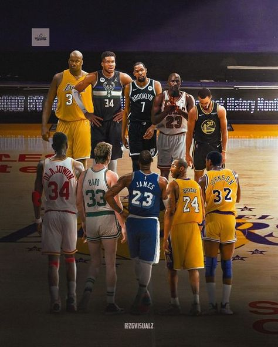

The 2024–25 NBA season has been a thrilling ride filled with historic milestones, unexpected twists, and intense competition, culminating in the start of the 2025 NBA Playoffs on April 19.
The Oklahoma City Thunder dominated the regular season, finishing with a league-best 68–14 record. They set an NBA record for the highest scoring differential in a season at +12.9 and achieved 51 double-digit victories, breaking the previous record held by the 1971–72 Lakers. Shai Gilgeous-Alexander led the charge, establishing the Thunder as serious title contenders.
Nikola Jokić of the Denver Nuggets continued redefining the center position, becoming the third player in league history to average a triple-double over a season. His performance on April 1—scoring 61 points with 10 rebounds and 10 assists—marked the highest-scoring triple-double in NBA history.
The Boston Celtics displayed elite perimeter shooting, setting a new record with 1,364 three-pointers in a single season. Despite a late-season dip in performance from Jayson Tatum, the Celtics clinched the second seed in the Eastern Conference.

LeBron James added to his legacy by surpassing Kareem Abdul-Jabbar for second place on the all-time regular-season games played list, reaching 1,561 games.
In the Western Conference, the Thunder await the results of the play-in tournament to determine their opponent. The Los Angeles Lakers, who acquired Luka Dončić mid-season, secured the third seed and are matched up against the Minnesota Timberwolves. Despite some internal conflict and a coaching change, the Denver Nuggets remain formidable with Jokić leading the way.

Over in the East, the Cleveland Cavaliers surprisingly finished as the top seed with a 64-win season. They await their play-in opponent. The second-seeded Boston Celtics are set to face the Orlando Magic, who advanced by defeating the Atlanta Hawks in the play-in tournament.
The season also featured significant off-court drama. The Boston Celtics are in the process of being sold for a record-breaking $6.1 billion. Coaching changes stirred controversy—most notably, the Denver Nuggets fired head coach Michael Malone despite making the playoffs and replaced him with David Adelman as interim coach. The Memphis Grizzlies’ decision to fire Taylor Jenkins proved costly as they were pushed into the play-in tournament and suffered an early exit.
The 2025 NBA Draft will take place June 25–26 at the Barclays Center in Brooklyn. Top prospects include Duke’s Cooper Flagg, Michigan’s Danny Wolf, and international standout Dame Sarr—all highly anticipated young stars who are expected to make an immediate impact.
With the playoffs now underway and the draft on the horizon, the excitement continues to build. From record-breaking team efforts to individual brilliance and dramatic front-office moves, the 2024–25 NBA season has delivered nonstop action—and it’s far from over. Fans can look forward to an electrifying postseason filled with elite matchups and emerging legends